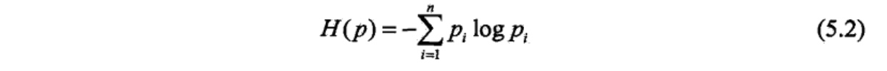
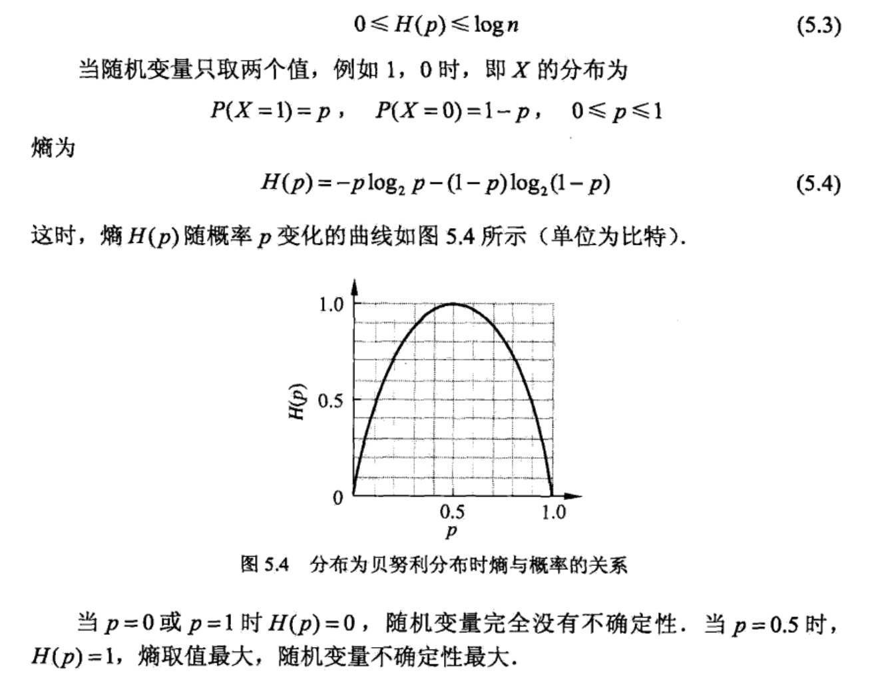
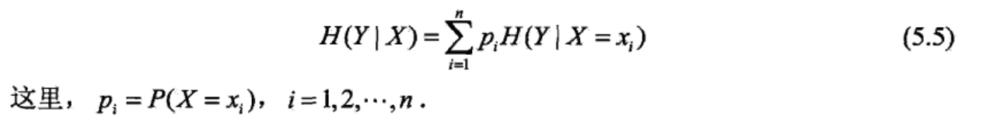
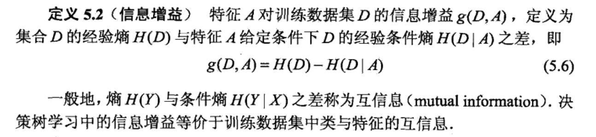
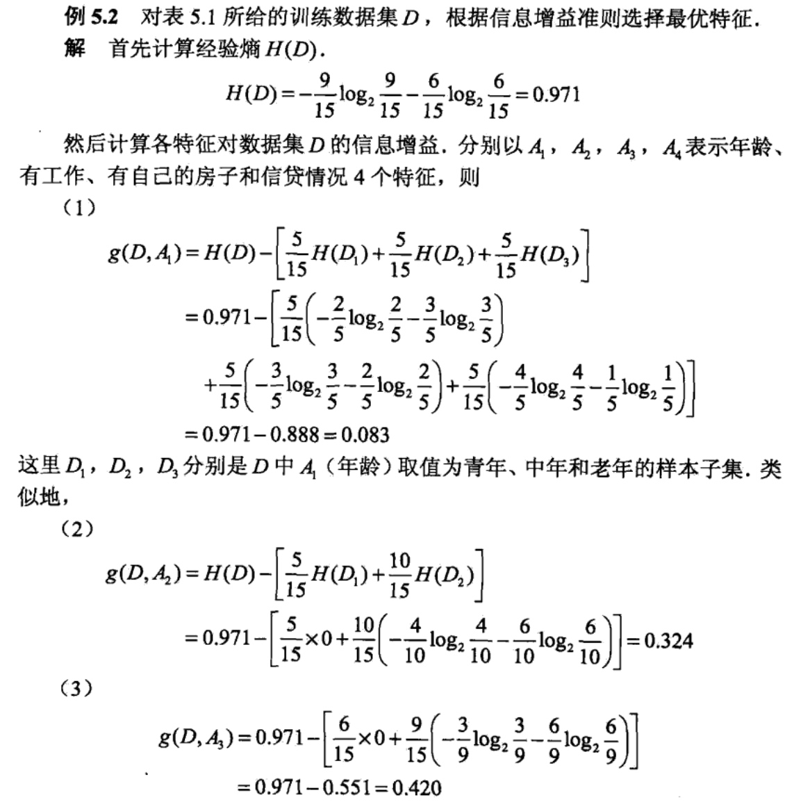

决策树（decision tree)是一种基本的分类与回归方法。本章主要讨论用于分类的决策树。决策树模型呈树形结构，在分类问题中，表示基于特征对实例进行分类的过程。它可以认为是if-then规则的集合，也可以认为是定义在特征空间与类空间上的条件概率分布。其主要优点是模型具有可读性，分类速度快。学习时，利用训练数据，根据损失函数最小化的原则建立决策树模型。预测时，对新的数据，利用决策树模型进行分类。决策树学习通常包括3个步骤：特征选择、决策树的生成和决策树的修剪。这些决策树学习的思想主要来源于由Quinlan在1986年提出的ID3算法和1993年提出的C4。5算法,以及由Breiman等人在1984年提出的CART算法。
决策树模型与学习
定义（决策树）：分类决策树模型是一种描述对实例进行分类的树形结 构。决策树由结点（node)和有向边（directed edge)组成。结点有两种类型：内部结点（internal node)和叶结点（leafnode)。内部结点表示一个特征或属性，叶结点表示一个类。
用决策树分类，从根结点开始，对实例的某一特征进行测试，根据测试结果，将实例分配到其子结点；这时，每一个子结点对应着该特征的一个取值。如此递归地对实例进行测试并分配，直至达到叶结点。最后将实例分到叶结点的类中。
图5.1是一个决策树的示意图。图中圆和方框分别表示内部结点和叶结点。

决策树与if-then规则
可以将决策树看成一个if-then规则的集合。将决策树转换成if-then规则的过程是这样的：由决策树的根结点到叶结点的每一条路径构建一条规则；路径上内部结点的特征对应着规则的条件，而叶结点的类对应着规则的结论。决策树的路径或其对应的if-then规则集合具有一个重要的性质:互斥并且完备。这就是说，每一个实例都被一条路径或一条规则所覆盖，而且只被一条路径或一条规则所覆盖。这里所谓覆盖是指实例的特征与路径上的特征一致或实例满足规则的条件。
决策树与条件概率分布
决策树还表示给定特征条件下类的条件概率分布。这一条件概率分布定义在特征空间的一个划分（partition)上。将特征空间划分为互不相交的单元（cell)或区域（region),并在每个单元定义一个类的概率分布就构成了一个条件概率分布。决策树的一条路径对应于划分中的一个单元。决策树所表示的条件概率分布由各个单元给定条件下类的条件概率分布组成。假设X为表示特征的随机变量， Y为表示类的随机变量，那么这个条件概率分布可以表示为P(Y|X)。X取值于给定划分下单元的集合，Y取值于类的集合。各叶结点（单元）上的条件概率往往偏向某一个类，即属于某一类的概率较大。决策树分类时将该结点的实例强行分到条件概率大的那一类去。
图5.2 (a)示意地表示了特征空间的一个划分。图中的大正方形表示特征空间。这个大正方形被若干个小矩形分割，每个小矩形表示一个单元。特征空间划分上的单元构成了一个集合，X取值为单元的集合。为简单起见，假设只有两类:正类和负类，即Y取值为+1和-1。小矩形中的数字表示单元的类。图5.2(b)示意地表示特征空间划分确定时，特征（单元）给定条件下类的条件概率分布。 图5.2 (b)中条件概率分布对应于图5.2 (a)的划分。当某个单元c的条件概率满足\(P(Y=+1|X= C)>0.5\)时，则认为这个单元属于正类，即落在这个单元的实例都被视为正例。图5.2(c)为对应于图5.2 (b)中条件概率分布的决策树。

决策树学习本质上是从训练数据集中归纳出一组分类规则。与训练数据集不相矛盾的决策树（即能对训练数据进行正确分类的决策树）可能有多个，也可能一个也没有。我们需要的是一个与训练数据矛盾较小的决策树，同时具有很好的泛化能力。从另一个角度看，决策树学习是由训练数据集估计条件概率模型。基于特征空间划分的类的条件概率模型有无穷多个。我们选择的条件概率模型应该 不仅对训练数据有很好的拟合，而且对未知数据有很好的预测。
决策树学习用损失函数表示这一目标。如下所述，决策树学习的损失函数通常是正则化的极大似然函数。决策树学习的策略是以损失函数为目标函数的最小化。
当损失函数确定以后，学习问题就变为在损失函数意义下选择最优决策树的问题。因为从所有可能的决策树中选取最优决策树是NP完全问题，所以现实中决策树学习算法通常采用启发式方法，近似求解这一最优化问题。这样得到的决策树是次最优（sub-optimal)的.
决策树学习的算法通常是一个递归地选择最优特征，并根据该特征对训练数据进行分割，使得对各个子数据集有一个最好的分类的过程。这一过程对应着对特征空间的划分，也对应着决策树的构建。开始，构建根结点，将所有训练数据都放在根结点。选择一个最优特征，按照这一特征将训练数据集分割成子集，使得各个子集有一个在当前条件下最好的分类。如果这些子集已经能够被基本正确分类，那么构建叶结点，并将这些子集分到所对应的叶结点中去：如果还有子集 不能被基本正确分类，那么就对这些子集选择新的最优特征，继续对其进行分割，构建相应的结点。如此递归地进行下去，直至所有训练数据子集被基本正确分类，或者没有合适的特征为止。最后每个子集都被分到叶结点上，即都有了明确的类。这就生成了一棵决策树。
以上方法生成的决策树可能对训练数据有很好的分类能力，但对未知的测试数据却未必有很好的分类能力，即可能发生过拟合现象。我们需要对己生成的树自下而上进行剪枝，将树变得更简单，从而使它具有更好的泛化能力。具体地，就是去掉过于细分的叶结点，使其回退到父结点，甚至更高的结点，然后将父结点或更高的结点改为新的叶结点。
如果特征数童很多，也可以在决策树学习开始的时候，对特征进行选择，只留下对训练数据有足够分类能力的特征。
可以看出，决策树学习算法包含特征选择、决策树的生成与决策树的剪枝过程。由于决策树表示一个条件概率分布，所以深浅不同的决策树对应着不同复杂度的概率模型。决策树的生成对应于模型的局部选择，决策树的剪枝对应于模型的全局选择。决策树的生成只考虑局部最优，相对地，决策树的剪枝则考虑全局最优。
决策树学习常用的算法有ID3、C4.5与CART,下面结合这些算法分别叙述决策树学习的特征选择、决策树的生成和剪枝过程。
特征选择
特征选择问题
特征选择在于选取对训练数据具有分类能力的特征。这样可以提高决策树学习的效率。如果利用一个特征进行分类的结果与随机分类的结果没有很大差别，则称这个特征是没有分类能力的。经验上扔掉这样的特征对决策树学习的精度影响不大。通常特征选择的准则是信息增益或信息增益比。
首先通过一个例子来说明特征选择问题：
例5.1：表5.1是一个由15个样本组成的贷款申请训练数据。数据包括贷款申请人的4个特征（属性)：第1个特征是年龄，有3个可能值：青年，中年，老年；第2个特征是有工作，有2个可能值：是，否；第3个特征是有自己的房子，有2个可能值：是，否；第4个特征是信贷情况，有3个可能值：非常好，好，一 般。表的最后一列是类别，是否同意贷款，取2个值：是，否.

希望通过所给的训练数据学习一个贷款申请的决策树，用以对未来的贷款申请进行分类，即当新的客户提出贷款申请时，根据申请人的特征利用决策树决定是否批准贷款申请。
特征选择是决定用哪个特征来划分特征空间。
图5.3表示从表5.1数据学习到的两个可能的决策树，分别由两个不同特征的根结点构成。图5.3(a)所示的根结点的特征是年龄，有3个取值，对应于不同的取值有不同的子结点。图5.3(b)所示的根结点的特征是有工作，有2个取值，对应于不同的取值有不同的子结点。两个决策树都可以从此延续下去。问题是：究竟选择哪个特征更好些？这就要求确定选择特征的准则。直观上，如果一个特 征具有更好的分类能力，或者说，按照这一特征将训练数据集分割成子集，使得各个子集在当前条件下有最好的分类，那么就更应该选择这个特征。信息增益 (information gain〉就能够很好地表示这一直观的准则.
信息增益
为了便于说明，先给出熵与条件熵的定义。
在信息论与概率统计中，熵(entropy)是表示随机变量不确定性的度量，设X是一个取有限个值的离散随机变量，其概率分布为：
\(P(X=x_i) = P_i , i=1,2,3...n\)
则随机变量X的熵定义为：
\(H(X) = -\sum^{n}_{i=1}{p_ilogp_i}\)
在上式中，若\(p_i=0\),则定义\(olog0=0\)。通常，上式中的对数以2为底或者以e为底（自然对数），这时熵的单位分别称作比特(bit)或纳特(nat).由定义可 知，熵只依赖于X的分布，而与X的取值无关，所以也可将X的熵记作开\(H_{(p)}\),即

熵越大，随机变量的不确定性就越大。从定义可验证：

设有随机变量(X,Y),其联合概率为：
条件熵H(Y|X)表示在已知随机变量X的条件下随机变量Y的不确定性。随机变量X给定的条件下随机变量Y的条件熵（conditional entropy) H(Y|X)，定义为X给定条件下Y的条件概率分布的熵对X的数学期望

当熵和条件熵中的概率由数据估计（特别是极大似然估计）得到时，所对应的熵与条件熵分别称为经验熵 (empirical entropy)和经验条件熵（empirical conditional entropy )。此时，如果有0概率，令0log0=0。
信息增益（information gain)表示得知特征X的信息而使得类Y的信息的不确定性减少的程度。
信息增益的定义如下所示：

决策树学习应用信息增益准则选择特征。给定训练数据集D和特征A,经验 熵H(D)表示对数据集D进行分类的不确定性。而经验条件熵H(D|A)表示在特征A给定的条件下对数据集D进行分类的不确定性。那么它们的差，即信息增益，就表示由于特征A而使得对数据集D的分类的不确定性减少的程度。显然，对于数据集D而言，信息增益依赖于特征，不同的特征往往具有不同的信息增益。信息增益大的特征具有更强的分类能力。
根据信息增益准则的特征选择方法是：对训练数据集（或子集）D,计算其每个特征的信息增益，并比较它们的大小，选择信息增益最大的特征。
下面讲述信息增益的算法：


下面举例：


信息增益比
信息增益值的大小是相对于训练数据集而言的，并没有绝对意义。在分类问題困难时，也就是说在训练数据集的经验熵大的时候，信息增益值会偏大。反之，信息增益值会偏小。使用信息增益比（information gain ratio)可以对这一问题进行校正。这是特征选择的另一准则。
定义（信息增益比）：特征A对训练数据集D的信息增益比\(g_R(D,A)\)定义为其信息增益\(g(D,A)\)与训练数据集D的经验熵H(D)之比：